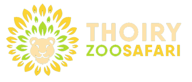
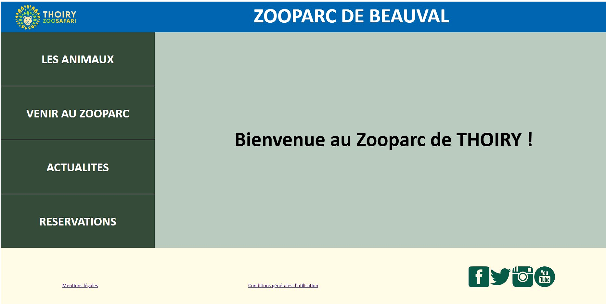
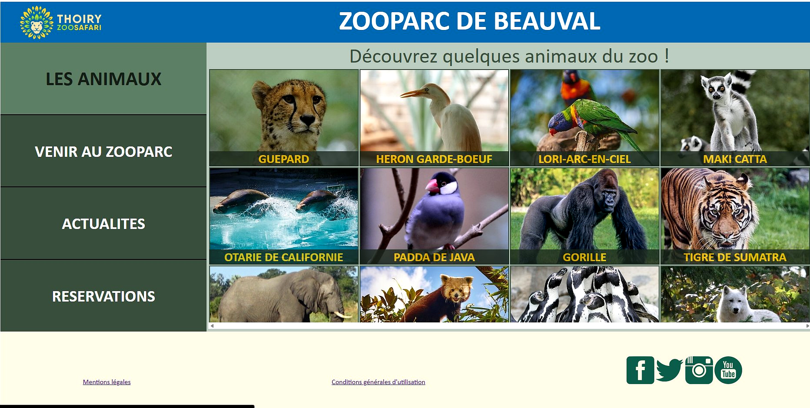

Site web multi-pages réalisé en BTS CIEL — présentation d'un zoo avec navigation, galerie d'animaux en tableau HTML et manipulation dynamique du DOM via JavaScript pur.
Contexte du projet
1 · Page d'accueil

2 · Page animaux

caption.
3 · Structure du projet
Page de bienvenue avec nav latérale et transformation JS du thème Thoiry → Beauval
Galerie en tableau HTML 4 colonnes, enrichie dynamiquement avec événements JS
Layout flex, couleurs thème Thoiry, nav et footer
Tableau, noms en overlay absolu sur les images, scrollable
4 · Extraits de code
// Transformation du thème au chargement document.querySelector("h1").innerHTML = "ZOOPARC DE BEAUVAL"; document.getElementById("logo").setAttribute("src", "Images/logo2.png"); document.querySelector("header").style.backgroundColor = "#006BB1"; // Mise à jour des liens réseaux sociaux list = document.querySelectorAll("a"); list[6].setAttribute("href", "https://www.facebook.com/zoobeauval"); list[7].setAttribute("href", "https://twitter.com/zoobeauval/"); list[8].setAttribute("href", "https://www.instagram.com/zoobeauval/");
// Création dynamique d'une ligne avec 4 nouveaux animaux let newtr = document.createElement("tr"); let tdnew = document.createElement("td"); let imgnew = document.createElement("img"); imgnew.setAttribute("src", "Images/colibri.jpg"); tdnew.appendChild(imgnew); newtr.appendChild(tdnew); document.querySelector("table").appendChild(newtr); // Interaction : clic sur le header → couleur aléatoire document.querySelector("header").addEventListener("click", function() { this.style.backgroundColor = '#' + (Math.random() * 0xFFFFFF << 0).toString(16); });
td { position: relative; padding: 0; } h3 { width: 100%; text-align: center; color: white; background-color: rgb(34, 46, 36); opacity: 0.8; position: absolute; bottom: 0px; z-index: 1; }
5 · Fonctionnalités clés
Transformation complète Thoiry → Beauval : logo, titre, couleur, réseaux sociaux
Ajout d'une ligne entière au tableau via createElement et appendChild
Clic sur le header → couleur de fond aléatoire générée en JavaScript
Survol des noms d'animaux → agrandissement, survol des menus → animation taille
Clic sur l'éléphant → alternance entre deux images différentes
Navigation latérale flex, noms en overlay absolu sur les images, footer responsive